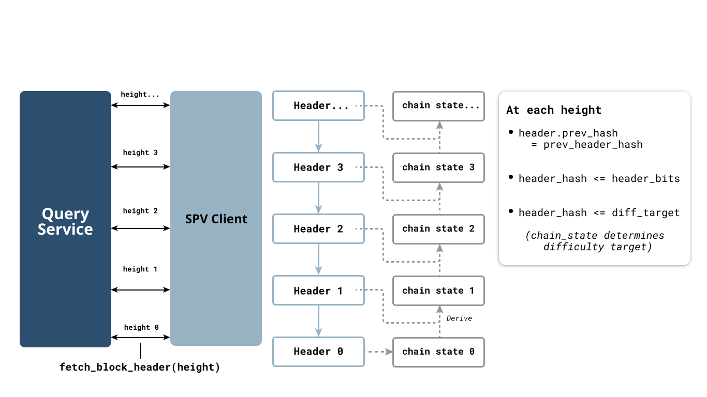
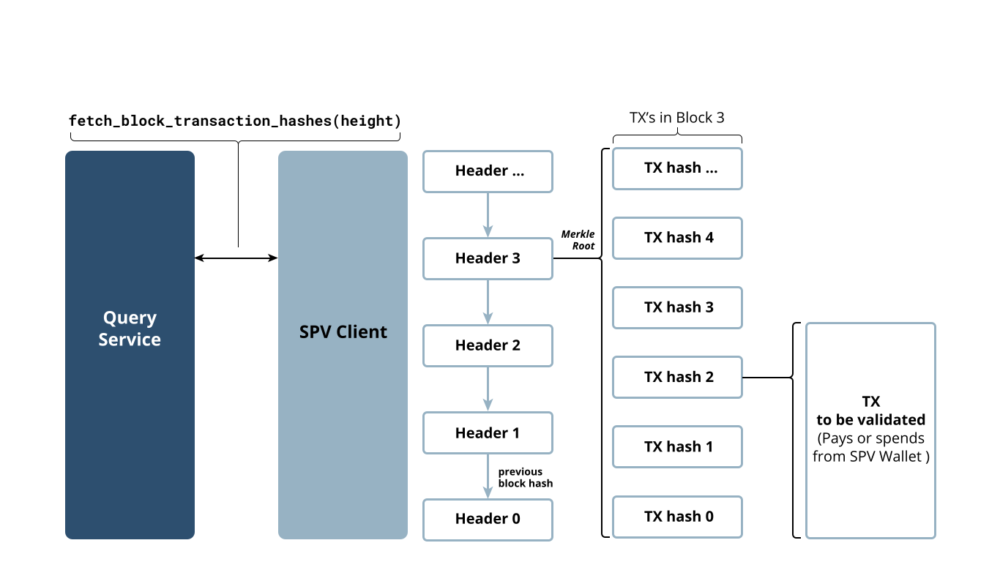
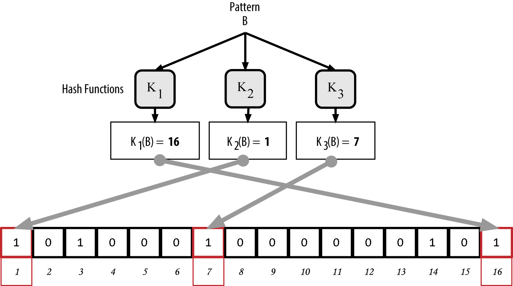

SPV: Simplified payment verification
- Motivation: Light clients, e.g. a smartphone
- doesn't have the
-
Bandwith to receive full blocks
-
Processing power to validate full blocks
- But we still want it to confirm payments to its address in a trust-minimizing way
- Three requirements:
-
Sync the header chain
-
Find candidate blocks
-
Confirm receiving tx in block
SPV Header Chain Validation

Merkle Proof: Validating TX Confirmation

SPV tx fetching strategies
- Naïve scriptPubKey subscription is terrible for privacy
- BIP37 used Bloom filters to ensure a superset of blocks would be returned
-
Multiple privacy leaks
- Expensive upkeep on the server side
- Almost unused today
- Neutrino BIP157/158: a single compact filter per block (Golomb-Rice coding)
-
vastly improved privacy
-
very cheap on server-side
- Factually the most-used SPV protocol:
- Electrum: Hash(scriptPubKey) subscription
- Private until output appears
Bloom filters
- Idea: create a bitmask of interesting addresses through suitable hash functions
- Probabilistic data structure: Server returns a superset of interesting transactions

- Construct and send it to server
- Problem: privacy / overhead tradeoffs are worse than expected
- Client can be fooled by a server tx-omission attack
Neutrino compact block filters
- Golomb-Rice encoding creates a very compact filter of all addresses used in the block
- 2MB block \(\rightarrow\) 15kB filter \(rightarrow\) 70MB per month
- Privacy: Ask one node for filters, another node for candidate block
- Decentralization: Server upkeep is vastly reduced: One precomputed filter per block
- No tx omission attacks
- Partially rolled out in Bitcoin Core